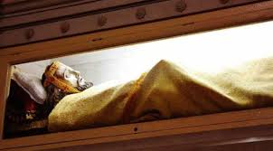
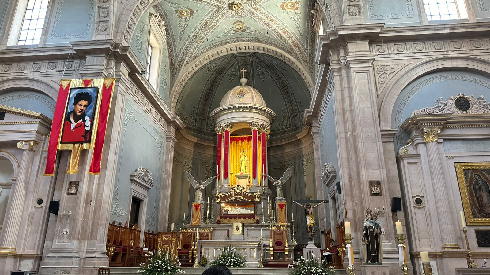

El 5 de febrero de 1754, fecha en el que el municipio de San José Iturbide fue fundado sea también la fecha que este unida según la leyenda lo registra a la misteriosa llegada de nuestro Señor en su advocación del Santo Entierro, a esta parroquia.
Se cuenta que una noche lluviosa, un forastero llegó a pedir posada al curato, por la mañana se fue, pero dejó una caja antes de irse; con el paso del tiempo el señor cura mandó descombrar la habitación y vieron de nueva cuenta la caja. Debido a que no hubo nadie que la reclamara procedieron a abrirla, encontrando en ella una hermosa escultura de nuestro Señor Jesucristo, la cual la conocemos como el Señor del Santo Entierro. También, otra versión menciona a un animal de carga que comenzó a llamar la atención de los feligreses y del personal de la parroquia, que al notar que tenía varios días parada afuera de la casa parroquial cargada con una enorme caja de madera. Decidieron acercarse y abrirla, y en su interior descubrieron una valiosa carga, la escultura del Señor del Entierro.
Se dice que el párroco abrió la caja el mismo día de la fundación de San José Iturbide, que es el día 5 de febrero, razón por la cual fue tan aceptado en la población san José Iturbide. El Señor del Santo Entierro se ha convertido en una imagen milagrosa y venerada por el pueblo. A quién atribuyen infinidad de milagros, teniendo más devotos que San José, patrono principal de la Parroquia de San José Iturbide Guanajuato.
